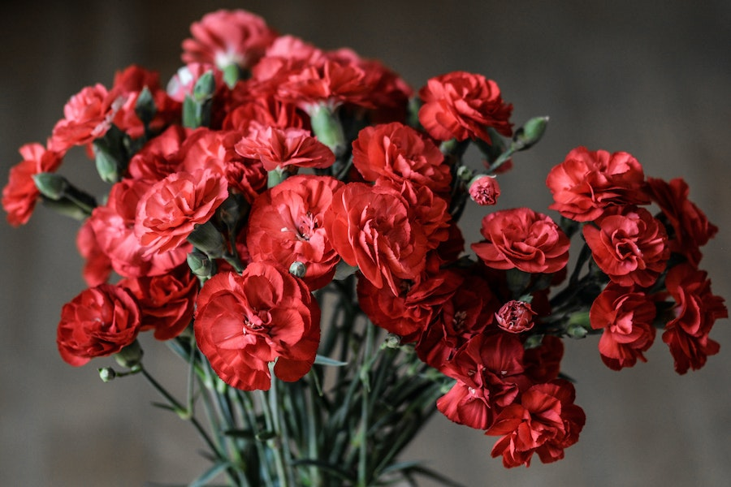

Imagens



Os cravos são nativos das Ilhas Molucas, na Indonésia, mas também são cultivados em várias partes do mundo, incluindo Madagascar, Tanzânia, Sri Lanka, Índia e outros países com climas tropicais.
Os cravos têm uma longa história de uso, tanto como especiaria quanto em práticas medicinais. Eles também têm significados culturais, sendo símbolos de amor, coragem e proteção em muitas culturas.
Existem diferentes tipos de cravos, incluindo o cravo-da-índia (Eugenia caryophyllata), o cravo-francês (Dianthus caryophyllus) e o cravo-seda (Syzygium aromaticum). Cada variedade tem usos específicos.
Os cravos são usados em diversas culinárias, em pratos como arroz de caril, doces e bebidas quentes. Além disso, eles são usados em óleos essenciais, aromaterapia, remédios naturais e até mesmo como repelentes de insetos.
O óleo essencial de cravo é valorizado por suas propriedades aromáticas e medicinais. Os preços do óleo essencial de cravo podem variar de acordo com a pureza e a marca, com frascos que variam de dezenas a centenas de reais.
Os cravos secos são usados na culinária e em chás. Eles podem ser adquiridos a granel ou em embalagens comerciais, com preços que variam de R$ 5 a R$ 20, dependendo da quantidade e da qualidade.
O cravo é um ingrediente comum em produtos de cuidado com a pele, como sabonetes e cremes. Os preços desses produtos podem variar, com opções acessíveis a partir de R$ 10.
Se você deseja cultivar suas próprias plantas de cravo, o preço de mudas ou sementes pode variar de R$ 10 a R$ 50, dependendo da fonte e do tamanho da planta.